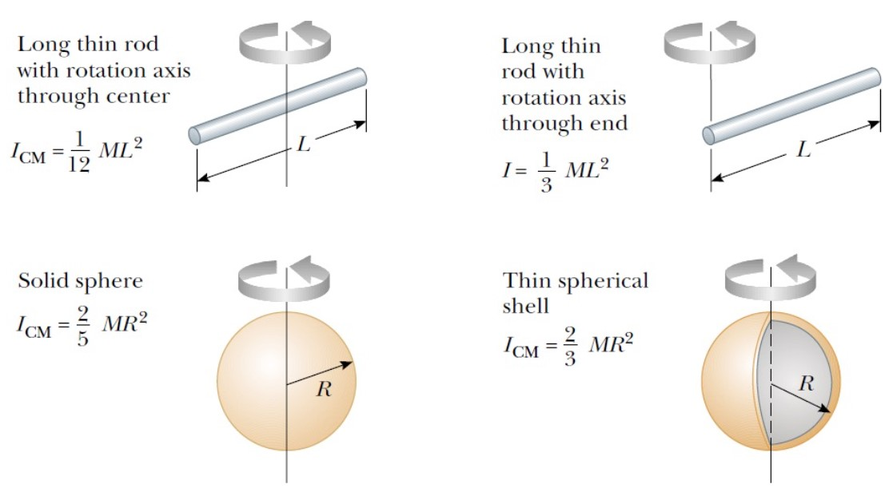

Chapter1&2
Newton's Laws
Drag（阻力）
-
$R=bv$
This assumption is valid for objects falling slowly through a liquid and for very small objects, such as dust particles, moving through air.
-
$R=cv^2$
This assumption is valid for large and fast moving objects, such as a skydiver moving through air in free fall.
Scaling
Center-of-mass Frame（质心系）
In the center-of-mass frame, the total momentum is always zero.
$\vec{v}{CM}=\frac{\sum m_i\vec{v}_i}{M}$ $\vec{p}'{tot}=\sum m_i\vec{v}'i=\sum m_i(\vec{v}_i-\vec{v}{CM})$ $=\sum m_i\vec{v}i-\sum m_i\vec{v}{CM}$ $=M\vec{v}{CM}-M\vec{v}{CM}$ $=0$
König’s theorem（柯尼希定理）
$E_k=\frac{1}{2}Mv_{CM}^2+\sum\frac{1}{2}m_iv_i'^2$
The total kinetic energy equals the kinetic energy of center-of-mass plus the kinetic energy in the center-of-mass frame.（总动能等于质心的动能加质心系下的总动能）
Gravitational Potential Energy（引力势能）
每一对都要加起来
总机械能：$E=\frac{1}{2}mv^2-\frac{GMm}{r}=-\frac{GMm}{2r}$
如果是椭圆轨道：$E=-\frac{GMm}{2a}$，其中$a$为椭圆的半长轴
Thrust（推力）
对于水平火箭发射：$(M+\Delta m)v=M(v+\Delta v)+\Delta m(v-v_e)$ $M\Delta v=v_e\Delta m$ $Mdv=-v_edM$ $F_{Thrust}=M\frac{dv}{dt}=|v_e\frac{dM}{dt}|$
Rotations
Angular displacement（角位移） * $\Delta\theta=\theta_f-\theta_i$
Finite angular displacement is not a vector.
Angular speed（角速度） * $\omega=\frac{d\theta}{dt}$ Units: $rad/s$ or $s^{-1}$ Direction: positive for counterclockwise motion（逆时针）
Angular acceleration（角加速度） * $\alpha=\frac{d\omega}{dt}$ Units: $rad/s^2$ or $s^{-2}$ Direction: positive when the rate of counterclockwise rotation is increasing
When rotating about a fixed axis, every particle on a rigid object rotates through the same angle and has the same angular speed and the same angular acceleration.
For rotation about a fixed axis, the only direction that uniquely specifies the rotational motion is the direction along the axis of rotation. Therefore, the directions of $\omega$ and $\alpha$ are along this axis. They obey the Right-Hand Rule.
Rotational kinematics（旋转动力学） * $\omega_f=\omega_i+\alpha t$ * $\theta_f=\theta_i+\omega_i t+\frac{1}{2}\alpha t^2$ * $\omega_f^2-\omega_i^2=2\alpha(\theta_f-\theta_i)$
（Under constant angular acceleration）
Transformation between angular and linear vectors * $v=\omega r$（$\vec{v}=\vec{\omega}\times\vec{r}$） * $a_{\bot}=r\omega^2$ * $a_{//}=r\alpha$
Torque（力矩） * $\tau=Fd$（$\vec{\tau}=\vec{r}\times\vec{F}$）
$d$ is the perpendicular distance from the axis to the line of action of $F$; also called the moment arm（力臂） of F.
counterclockwise torque: positive; clockwise torque: negative
Moment of inertia（转动惯量）
- $\tau=I\alpha$
- $I=mr^2$
Rotational kinetic energy（转动动能）
- $K_R=\frac{1}{2}I\omega^2$


Power in rotation（转动功率） * $P=\tau\omega$
Useful equations in rotational and linear motion

Parallel-Axis Theorem（平行轴定理） * $I_P=I_{CM}+Md^2$
$I_P$: moment of inertia with respect to the axis crossing $P$. $I_{CM}$:moment of inertia with respect to the axis crossing the center of mass. $d$:the distance between $P$ and the center of mass.
Vector product（叉乘）
- $\vec{C}=\vec{A}\times\vec{B}$
- $|C|=|A||B|\sin\theta$
The direction of $C$ is perpendicular to the plane formed by $A$ and $B$, and the best way to determine this direction is to use the Right-Hand Rule.
Unlike the scalar product, the vector product is not commutative（不满足交换律）. Instead, the order in which the two vectors are multiplied in a vector product is important: * $\vec{A}\times\vec{B}=-\vec{B}\times\vec{A}$
The vector product obeys the distributive law（分配律）: * $\vec{A}\times(\vec{B}+\vec{C})=\vec{A}\times\vec{B}+\vec{A}\times\vec{C}$
The derivative of the cross product with respect to some variable (such as t) is: * $\frac{d}{dt}(\vec{A}\times\vec{B})=\vec{A}\times\frac{d\vec{B}}{dt}+\frac{d\vec{A}}{dt}\times\vec{B}$
Other identities: * $(\vec{a}\times\vec{b})·(\vec{c}\times\vec{d})=(\vec{a}·\vec{c})(\vec{b}·\vec{d})-(\vec{a}·\vec{d})(\vec{b}·\vec{c})$ * $\vec{a}\times(\vec{b}\times\vec{c})=\vec{b}(\vec{a}·\vec{c})-\vec{c}(\vec{a}·\vec{b})$
Coriolis force（科里奥利力）
$d\vec{r}|_I=d\vec{r}|_R+(\vec{\omega}\times\vec{r})dt$ $\frac{d\vec{r}}{dt}|_I=\frac{d\vec{r}}{dt}|_R+\vec{\omega}\times\vec{r}$ $\frac{d^2\vec{r}}{dt^2}|_I=[\frac{d}{dt}|_R+\vec{\omega}\times]^2\vec{r}=\frac{d^2\vec{r}}{dt^2}|_R+2\vec{\omega}\times\frac{d\vec{r}}{dt}|_R+\vec{\omega}\times(\vec{\omega}\times\vec{r})$
$\vec{F_R}=m\frac{d^2\vec{r}}{dt^2}|_R=m\frac{d^2\vec{r}}{dt^2}|_I-2m\vec{\omega}\times\frac{d\vec{r}}{dt}|_R-m\vec{\omega}\times(\vec{\omega}\times\vec{r})$ $=\vec{F_I}-2m\vec{\omega}\times\vec{v_R}-m\vec{\omega}\times(\vec{\omega}\times\vec{r})$
If $\vec{r}\bot\vec{\omega}$: $\vec{F_R}=\vec{F_I}-2m\vec{\omega}\times\vec{v_R}+m\omega^2\vec{r}$
Coriolis force（科里奥利力）：$-2m\vec{\omega}\times\vec{v_R}$ Centrifugal force（离心力）：$m\omega^2\vec{r}$
Pure rolling motion（纯滚动） * $v_{CM}=R\omega$ * $a_{CM}=r\alpha$ * $K=\frac{1}{2}I_{CM}\omega^2+\frac{1}{2}Mv_{CM}^2=\frac{1}{2}I_P\omega^2$
$P$ is the point which is between the object and the surface, and it is at rest relative to the surface because slipping does not occur.
Angular momentum（角动量） * $L=mvr\sin\theta=I\omega$
Conservation of angular momentum（角动量守恒）
The total angular momentum of a system is constant in both magnitude and direction if the resultant external torque acting on the system is zero.
Procession（进动）
Equilibrium（平衡态）
- Translational equilibrium The linear momentum of its center of mass is constant
- Rotational equilibrium The angular momentum about its center of mass, or about any other point, is also constant.
- Equilibrium An object is in equilibrium if it is in both translational and rotational equilibrium.
- static equilibrium If the object is at rest and so has no linear speed or angular speed, the object is in static equilibrium.
- stable static equilibrium If a body tends to return to a state of static equilibrium after having been displaced from that state by a force, the body is said to be in stable static equilibrium.
Simple Harmonic Motion（简谐运动）
Definition: An object moves with simple harmonic motion whenever its acceleration is proportional to its displacement from some equilibrium position and is oppositely directed.
- $F_x=-kx=ma$
- $\omega=\sqrt{\frac{k}{m}}$
- $x=A\cos(\omega t+\phi)$
- $E=\frac{1}{2}kA^2$
For a simple harmonic oscillator, the period and angular frequency is an intrinsic property of the system. However, the amplitude and phase are two arbitrary constants that depend on the initial condition of the system.
Single Pendulum（单摆）
$\omega=\sqrt{\frac{g}{L}}$
Physical Pendulum（物理摆）

$\tau=mgd\sin\theta=mgd\theta$ $\alpha=\frac{d^2\theta}{dt^2}$ $\tau=I\alpha$ $\frac{d^2\theta}{dt^2}=\frac{mgd}{I}\theta=\omega^2\theta$ $\omega=\sqrt{\frac{mgd}{I}}$
Damped Oscillation（阻尼振动）
- $F_D=bv$（$b$: damping coefficient）
- $x=Ae^{-\frac{b}{2m}t}\cos(\omega t+\phi)$
- $\omega=\sqrt{\frac{k}{m}-(\frac{b}{2m})^2}$

Forced Oscillation（受迫振动）
When the object is doing damped oscillation, if we exert a force $F_{ext}=cos(\omega't)$, whose $\omega$ is determined by the environment, the the equation will be like this: * $x=Ae^{-\frac{b}{2m}t}\cos(\omega t+\phi)+A'\cos(\omega't+\phi')$
$Ae^{-\frac{b}{2m}t}\cos(\omega t+\phi)$ is called transient solution. $A'\cos(\omega't+\phi')$ is called steady solution. $\omega=\sqrt{\frac{k}{m}-(\frac{b}{2m})^2}$ $\omega'$ is driving frequency,not the intrinsic frequency of the harmonic oscillator.
When $t$ is big enough, the result tends to be the steady solution.
- slow drive: $\omega'<\sqrt{\frac{k}{m}}$ The driving force is slow enough that the oscillator can follow the force after the transient motion decays.
- fast drive: $\omega'>\sqrt{\frac{k}{m}}$ The driving force is fast such that the oscillator cannot follow the force and lags behind ( $\pi$ out of phase). Note that the amplitude is smaller than that for slow drive.
- resonance（共振）: $\omega'=\sqrt{\frac{k}{m}}$ The amplitude quickly grows to a maximum. After the transient motion decays and the oscillator settles into steady state motion, the displacement $\frac{\pi}{2}$ out of phase with force.
Normal Mode（简正模）
A normal mode of an oscillating system is a pattern of motion in which all parts of the system oscillate harmonically with the same frequency and phase. The most general motion of the system is a superposition（叠加）of its normal modes.

Example: how to find normal mode? * 1.Assume normal mode: $x_i=A_i\cos(\omega t+\phi), i=1,2$ * 2.Find equations of motion: $m\frac{d^2x_1}{dt^2}=-k'x_1-k(x_1-x_2)$ $m\frac{d^2x_2}{dt^2}=-k'x_2-k(x_2-x_1)$ * 3.Substitute into the formula: $m\omega^2A_1=(k'+k)A_1-kA_2$ $m\omega^2A_2=-kA_1+(k'+k)A_2$ * 4.Transform the equations into matrix format: $\begin{pmatrix} k'+k-m\omega^2&-k\ -k&k'+k-m\omega^2 \end{pmatrix} \begin{pmatrix} A_1\ A_2 \end{pmatrix}=0$ * 5.To ensure there are solutions, the determinant（行列式）of the matrix should be 0: $\omega_1=\sqrt{\frac{k'+2k}{m}}, A_1=-A_2$ $\omega_2=\sqrt{\frac{k'}{m}}, A_1=A_2$

Elastic Modulus（弹性模量）
- $Elastic~modulus\equiv\frac{stress}{strain}$
- Stress（应力）： A quantity that is proportional to the force causing a deformation; more specifically, stress is the external force acting on an object per unit cross-sectional area.
- Strain（应变）： A measure of the degree of deformation.


Reflection of Waves


Linear Wave Equation
- $\frac{\partial^2y}{\partial t^2}=v^2\frac{\partial^2y}{\partial x^2}$
The linear wave equation applies in general to various types of linear waves.
Wave Function
- $y=A\sin(kx-\omega t+\phi)$
$k=\frac{2\pi}{\lambda}$（angular wave number） $\omega=\frac{2\pi}{T}$（angular frequency）
The Speed of Waves on Strings
- $v=\sqrt{\frac{F}{\mu}}$

$\Delta m=\mu\Delta x$ （$\mu$ is linear mass density） $F_{1x}=F_{2x}\approx F$ （$F$ is tension in the string） $\Delta ma_y=F_y$ $\mu\Delta x\frac{\partial^2y}{\partial t^2}=F\frac{\partial y}{\partial x}|{x+\Delta x}-F\frac{\partial y}{\partial x}|{x}$ $\frac{\partial^2y}{\partial t^2}=\frac{F}{\mu}\frac{\partial^2y}{\partial x^2}$ according to the linear wave equation: $v=\sqrt{\frac{F}{\mu}}$
Rate of Energy Transfer
- $P(x,t)=F_y(x,t)·v_y(x,t)$ $=-F\frac{\partial y}{\partial x}·\frac{\partial y}{\partial t}$ $=Fk\omega A^2\cos^2(kx-\omega t)$
- $P_{avg}=\frac{1}{2}Fk\omega A^2=\frac{1}{2}\mu\omega^2A^2v$
Interference
Same frequency, wavelength, amplitude, direction. Different phase.
$\Delta r=|r_1-r_2|=\begin{cases} n\lambda:in~phase\ (n+\frac{1}{2})\lambda:out~of~phase \end{cases}$
Beating
Beating is the periodic variation in intensity at a given point due to the superposition of two waves having slightly different frequencies.

Beat frequency: $f_b=|f_1-f_2|$
Standing Waves
Same frequency, wavelength, amplitude. Different direction.

Variations of Pressure of Sound Waves
$p(x,t)=-B\frac{\partial u(x,t)}{\partial x}$
$B$ is bulk modulus.
Speed of Sound in a Fluid
$v=\sqrt{\frac{B}{\rho}}$
$\rho$ is the density of the medium in equilibrium.
Sound Intensity
$I(x,t)=p(x,t)v(x,t)$
Here $v$ is the speed of phonon.
$I=\frac{1}{2}\rho v(\omega A)^2$
Here $v$ is the speed of sound.
Decibel（分贝）
$\beta=10\log_{10}(\frac{I}{I_0})$
$I_0=1.00\times10^{-12}W/m^2$
Doppler Effect（多普勒效应）
$f'=\frac{v+v_O}{v-v_S}f$
$v_O$ is the speed of observer, + if from $O$ to $S$. $v_S$ is the speed of source, + if from $S$ to $O$.
Shock Wave（激波）
A shock wave happens when the source is moving faster than the speed of wave.